acousticTS implementation
These pages follow the coefficient-map view of scattering and later numerical implementations for axisymmetric bodies (Waterman 1969, 2009; Ganesh and Hawkins 2022).
The acousticTS package uses object-based scatterers, so the
TMM workflow follows the same broad structure used
elsewhere in the package: define the geometry, attach the material
interpretation, evaluate target strength over the frequency range of
interest, and then inspect the returned response carefully enough to
understand what the model is actually buying you.
Why use TMM over SPHMS or
PSMS?
For the supported canonical shapes, TMM is not primarily
about producing a different target-strength answer from
SPHMS, PSMS, or FCMS. In the
exact or sanity-checked single-target cases documented here, it reduces
to those shape-specific families. The reason to use TMM is
that it organizes the scattering problem around an incident-to-scattered
coefficient map rather than only around a monostatic backscatter
formula. That makes it the natural family for stored T-matrix blocks,
bistatic scattering, orientation averaging, and later multi-target
workflows.
In other words:
- if the goal is only a sphere target-strength calculation,
SPHMSis the more direct exact model, - if the goal is only a prolate-spheroid target-strength calculation,
PSMSis the more direct exact model, - if the goal is only a finite-cylinder target-strength calculation,
FCMSis the more direct exact model even though the default monostatic cylinder branch inTMMis benchmark-matched to it, and - if the goal is to stay inside a transition-matrix framework that can
grow into broader scattering workflows while using one common
post-processing layer across spheres, spheroids, and cylinders,
TMMis the relevant model family.
The TMM cylinder branch is intentionally narrower than
the sphere, oblate, and prolate branches. The default monostatic path is
benchmark-matched to FCMS, but full retained-angle cylinder
grids and bistatic summaries remain outside the validated public
scope.
Object generation
library(acousticTS)
density_sw <- 1026.8
sound_speed_sw <- 1477.3
sphere_shape <- sphere(radius_body = 0.01)
oblate_shape <- oblate_spheroid(
length_body = 0.012,
radius_body = 0.01,
n_segments = 80
)
prolate_shape <- prolate_spheroid(
length_body = 0.14,
radius_body = 0.01,
n_segments = 80
)
cylinder_shape <- cylinder(
length_body = 0.07,
radius_body = 0.01,
n_segments = 80
)
sphere_object <- fls_generate(
shape = sphere_shape,
density_body = 1028.9,
sound_speed_body = 1480.3,
theta_body = pi / 2
)
oblate_object <- fls_generate(
shape = oblate_shape,
density_body = 1028.9,
sound_speed_body = 1480.3,
theta_body = pi / 2
)
prolate_object <- fls_generate(
shape = prolate_shape,
density_body = 1028.9,
sound_speed_body = 1480.3,
theta_body = pi / 2
)
cylinder_object <- fls_generate(
shape = cylinder_shape,
density_body = 1028.9,
sound_speed_body = 1480.3,
theta_body = pi / 2
)The setup looks like the other exact families in the package: build a
shape, generate a homogeneous scatterer, and then call
target_strength(). The practical difference is that
TMM keeps the calculation inside a transition-matrix
viewpoint rather than only inside a direct modal-series viewpoint. The
documented shape set is:
SphereOblateSpheroidProlateSpheroidCylinder
Calculating a TS-frequency spectrum
sphere_object <- target_strength(
object = sphere_object,
frequency = seq(12e3, 120e3, by = 12e3),
model = "tmm",
boundary = "liquid_filled",
density_sw = density_sw,
sound_speed_sw = sound_speed_sw
)
prolate_object <- target_strength(
object = prolate_object,
frequency = c(12e3, 18e3, 38e3, 70e3, 100e3),
model = "tmm",
boundary = "liquid_filled",
density_sw = density_sw,
sound_speed_sw = sound_speed_sw
)
sphere_object@model$TMM## frequency f_bs sigma_bs TS n_max
## 1 12000 -6.343290e-06+1.231703e-09i 4.023733e-11 -103.95371 6
## 2 24000 -1.805437e-05+2.830355e-08i 3.259611e-10 -94.86834 8
## 3 36000 -2.075053e-05+1.169577e-07i 4.305981e-10 -93.65928 9
## 4 48000 -8.027899e-06+1.690861e-07i 6.447575e-11 -101.90604 10
## 5 60000 1.119724e-05-1.833465e-09i 1.253781e-10 -99.01778 11
## 6 72000 2.046997e-05-3.101531e-07i 4.191160e-10 -93.77666 11
## 7 84000 1.133235e-05-3.356291e-07i 1.285348e-10 -98.90979 12
## 8 96000 -8.152309e-06+1.022055e-07i 6.647058e-11 -101.77371 13
## 9 108000 -2.017964e-05+5.314642e-07i 4.075003e-10 -93.89872 14
## 10 120000 -1.347015e-05+3.698175e-07i 1.815818e-10 -97.40928 14
prolate_object@model$TMM## frequency f_bs sigma_bs TS n_max
## 1 12000 -4.439503e-05+3.114131e-08i 1.970920e-09 -87.05331 4
## 2 18000 -8.709975e-05+1.363906e-07i 7.586386e-09 -81.19965 5
## 3 38000 -1.380278e-04+9.507581e-07i 1.905259e-08 -77.20046 10
## 4 70000 1.420489e-04-1.952261e-06i 2.018169e-08 -76.95042 17
## 5 100000 -9.784203e-05+1.983609e-06i 9.576997e-09 -80.18771 24This step is intentionally similar to the other exact families. The
important part is not that the call looks unfamiliar. It is that the
stored result comes from a T-matrix-centered model family. For spheres,
the reported n_max is the retained spherical-wave cutoff.
For prolates, the reported n_max is inherited from the
exact spheroidal retained system and should therefore be interpreted as
the size of the retained spheroidal solve rather than as a
spherical-wave truncation limit.
Extracting model results
Model results can be extracted either visually or directly through
extract().
Accessing results
## frequency f_bs sigma_bs TS n_max
## 1 12000 -6.343290e-06+1.231703e-09i 4.023733e-11 -103.95371 6
## 2 24000 -1.805437e-05+2.830355e-08i 3.259611e-10 -94.86834 8
## 3 36000 -2.075053e-05+1.169577e-07i 4.305981e-10 -93.65928 9
## 4 48000 -8.027899e-06+1.690861e-07i 6.447575e-11 -101.90604 10
## 5 60000 1.119724e-05-1.833465e-09i 1.253781e-10 -99.01778 11
## 6 72000 2.046997e-05-3.101531e-07i 4.191160e-10 -93.77666 11At this stage, the main thing to confirm is that TMM is
reproducing the expected exact-family response for the chosen geometry
rather than drifting away from it. That is especially important for a
model family like this one, because the main value of the
transition-matrix formulation is not that it should disagree with
SPHMS or PSMS on canonical shapes. It is that
it should reproduce them while retaining the more general
transition-matrix bookkeeping.
Explicit T-matrix storage
Explicit per-frequency T-matrix block storage is available for both supported geometry branches.
sphere_store <- target_strength(
object = fls_generate(
shape = sphere(radius_body = 0.01, n_segments = 80),
g_body = 1,
h_body = 1,
theta_body = pi / 2
),
frequency = 38e3,
model = "tmm",
boundary = "pressure_release",
density_sw = density_sw,
sound_speed_sw = sound_speed_sw,
store_t_matrix = TRUE
)
length(sphere_store@model_parameters$TMM$parameters$t_matrix[[1]])## [1] 10For prolate spheroids, the stored blocks live in the same
@model_parameters$TMM$parameters$t_matrix slot and can be
reused through helpers such as tmm_scattering(),
tmm_average_orientation(),
tmm_bistatic_summary(), and tmm_products()
without rebuilding the retained modal solve. Cylinders can also be
stored, but the retained cylinder state is intentionally narrower: it
reuses the exact geometry-matched cylindrical family only for exact
monostatic evaluations and orientation-averaged monostatic products.
Full general-angle cylinder grids and bistatic summaries are not exposed
because a validated retained cylinder angular operator is missing.
Orientation averaging from stored blocks
One of the practical reasons to keep the result in a T-matrix framework is that the same stored blocks can be reused for other single-target summaries without rerunning the boundary solve. The simplest example is an orientation-averaged monostatic cross section.
prolate_store <- target_strength(
object = fls_generate(
shape = prolate_spheroid(
length_body = 0.14,
radius_body = 0.01,
n_segments = 80
),
density_body = 1028.9,
sound_speed_body = 1480.3,
theta_body = pi / 2
),
frequency = seq(12e3, 100e3, 2e3),
model = "tmm",
boundary = "liquid_filled",
density_sw = density_sw,
sound_speed_sw = sound_speed_sw,
store_t_matrix = TRUE
)
orientation_dist <- tmm_orientation_distribution(
distribution = "uniform",
lower = 0.45 * pi,
upper = pi,
n_theta = 7
)
orientation_avg <- tmm_average_orientation(
object = prolate_store,
distribution = orientation_dist
)
orientation_avg## frequency sigma_bs TS
## 1 12000 4.502163e-10 -93.46579
## 2 14000 6.702413e-10 -91.73769
## 3 16000 9.192786e-10 -90.36553
## 4 18000 1.170862e-09 -89.31494
## 5 20000 1.399276e-09 -88.54097
## 6 22000 1.548806e-09 -88.10003
## 7 24000 1.585990e-09 -87.99700
## 8 26000 1.469957e-09 -88.32695
## 9 28000 1.232136e-09 -89.09341
## 10 30000 9.347098e-10 -90.29323
## 11 32000 6.301750e-10 -92.00539
## 12 34000 3.607924e-10 -94.42743
## 13 36000 1.701901e-10 -97.69066
## 14 38000 8.946596e-11 -100.48342
## 15 40000 1.192773e-10 -99.23442
## 16 42000 2.704566e-10 -95.67902
## 17 44000 5.266602e-10 -92.78470
## 18 46000 8.330752e-10 -90.79316
## 19 48000 1.119975e-09 -89.50792
## 20 50000 1.305324e-09 -88.84282
## 21 52000 1.354505e-09 -88.68219
## 22 54000 1.285562e-09 -88.90907
## 23 56000 1.118337e-09 -89.51427
## 24 58000 8.827687e-10 -90.54153
## 25 60000 6.240222e-10 -92.04800
## 26 62000 3.913264e-10 -94.07461
## 27 64000 2.144002e-10 -96.68775
## 28 66000 1.343882e-10 -98.71639
## 29 68000 1.862644e-10 -97.29870
## 30 70000 3.663744e-10 -94.36075
## 31 72000 6.192308e-10 -92.08147
## 32 74000 8.730832e-10 -90.58944
## 33 76000 1.074125e-09 -89.68945
## 34 78000 1.193339e-09 -89.23236
## 35 80000 1.223384e-09 -89.12437
## 36 82000 1.161184e-09 -89.35099
## 37 84000 1.016937e-09 -89.92706
## 38 86000 8.210382e-10 -90.85637
## 39 88000 5.984286e-10 -92.22988
## 40 90000 3.856175e-10 -94.13843
## 41 92000 2.527349e-10 -95.97335
## 42 94000 2.403773e-10 -96.19107
## 43 96000 3.303472e-10 -94.81029
## 44 98000 4.884121e-10 -93.11214
## 45 100000 6.738344e-10 -91.71447By default, tmm_average_orientation() assumes the exact
monostatic receive direction for each supplied incident angle. So the
helper is averaging the differential backscattering cross section over
the chosen orientation distribution, not rebuilding the underlying
T-matrix solve at every angle.
The distribution helper is there so the main orientation pathways stay explicit and standardized:
-
distribution = "uniform"creates a uniform distribution intheta_bodyover a bounded interval, -
distribution = "normal"creates a normal distribution on[0, pi], -
distribution = "truncated_normal"creates a normal distribution restricted to[lower, upper], and -
distribution = "quadrature"ordistribution = "pdf"lets the user supply their own angle grid and either direct weights or a density.
Because this helper is meant for monostatic orientation-averaged
backscatter, its returned columns follow the same naming convention used
elsewhere in the package: sigma_bs and TS.
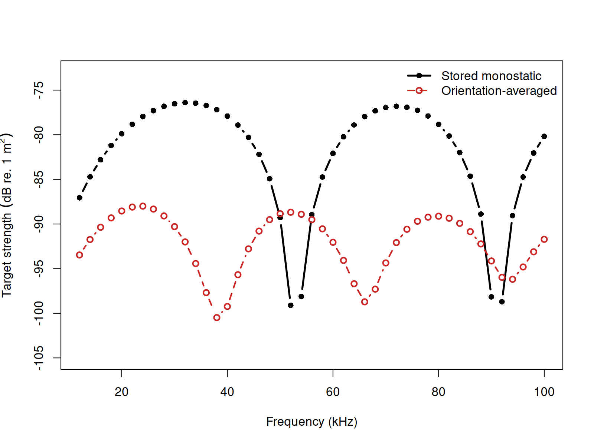
The orientation-averaged line can sit far below the stored monostatic
line, and that is not a bug by itself. The stored monostatic spectrum in
this example is the broadside response of one fixed orientation, while
the orientation-averaged spectrum is a linear average of
sigma_bs over a wide range of body angles. For a long
prolate spheroid, broadside is typically much stronger than the more
oblique and near-end-on views, so the average can be many decibels lower
than the broadside-only curve.
Angular scattering slices from stored blocks
The same stored blocks can also be sent through
plot(..., type = "scattering") to inspect a single angular
slice of the far-field response at a chosen stored frequency.
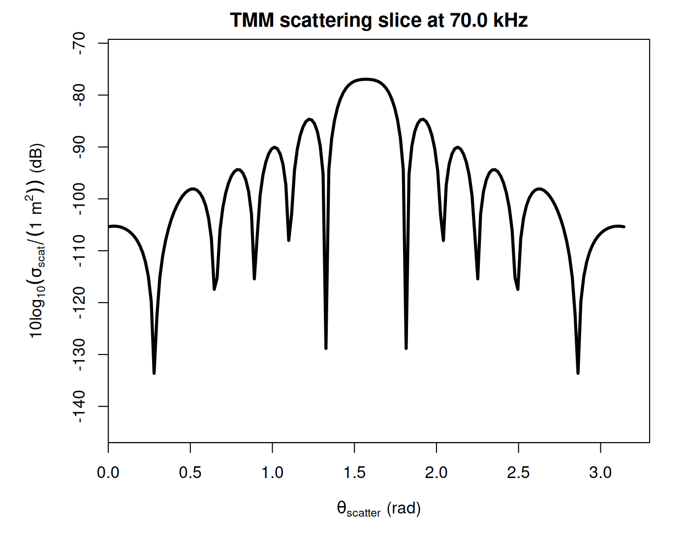
This is useful when the question is no longer just “what is the monostatic target strength?” but also “how does the same stored transition matrix distribute scattering over receive angle at a fixed frequency?” That is exactly the kind of post-processing that is natural in a T-matrix workflow and comparatively awkward in the purely direct exact-family formulations.
All of the tmm_scattering()-style helpers use the
body-fixed angular coordinates of the canonical
axisymmetric target, not arbitrary world-frame directions. For the
built-in prolate, oblate, and cylinder shapes in acousticTS, the
symmetry axis is the body x-axis. So when these helpers are
compared against an external BEM/FEM slice generated in a world
x-y plane, the world directions need to be converted to the
body-fixed (\theta, \phi) convention before the comparison
is apples-to-apples.
Higher-level bistatic summaries
Once the stored blocks are available, the next natural step is to
move beyond individual points and slices and ask for higher-level
bistatic summaries. Within the documented package scope, that applies to
the spherical and spheroidal stored branches.
tmm_bistatic_summary() does that for one stored frequency
by returning:
- a forward-centered great-circle slice,
- an orthogonal dorsal/ventral-style great-circle slice,
- the peak-scattering direction on a 2D receive-angle grid,
- the exact monostatic backscatter value,
- a
-3 dBbackscatter-lobe width measured on the forward-centered slice, and - integrated scattering over coarse angular sectors measured relative to the forward direction.
summary_70 <- tmm_bistatic_summary(
object = prolate_store,
frequency = 70e3,
n_theta = 21,
n_phi = 41,
n_psi = 41
)
summary_70$metrics## frequency forward_sigma_scat forward_sigma_scat_dB sigma_bs TS
## 1 70000 7.00483e-07 -61.54602 2.018169e-08 -76.95042
## peak_theta_scatter peak_phi_scatter peak_psi_scatter peak_sigma_scat
## 1 1.570796 3.141593 0 7.00483e-07
## peak_sigma_scat_dB backscatter_lobe_width
## 1 -61.54602 1.021018
summary_70$sector_integrals## sector psi_min psi_max integrated_sigma_scat
## 1 forward_sector 0.000000 1.047198 1.711232e-07
## 2 oblique_sector 1.047198 2.094395 1.659806e-08
## 3 backward_sector 2.094395 3.141593 1.427224e-08Those summary products are not new physics. They are just structured
reuses of the same stored T-matrix blocks. That makes them a good
sanity-check layer: the exact monostatic value reported by
summary_70$metrics$TS should agree with the monostatic
TS already stored on the object at 70 kHz.
Single solved target, many post-process products
The separate helpers are useful when only one post-processing product
is needed. But the broader T-matrix workflow is often “solve once, then
ask for several things.” The higher-level tmm_products()
wrapper is meant for exactly that pattern.
products_70 <- tmm_products(
object = prolate_store,
frequency = 70e3,
orientation = orientation_dist,
bistatic_summary = TRUE,
n_theta = 21,
n_phi = 41,
n_psi = 41
)
names(products_70)## [1] "monostatic" "orientation_average" "bistatic_summary"
products_70$bistatic_summary$metrics## frequency forward_sigma_scat forward_sigma_scat_dB sigma_bs TS
## 1 70000 7.00483e-07 -61.54602 2.018169e-08 -76.95042
## peak_theta_scatter peak_phi_scatter peak_psi_scatter peak_sigma_scat
## 1 1.570796 3.141593 0 7.00483e-07
## peak_sigma_scat_dB backscatter_lobe_width
## 1 -61.54602 1.021018This is closer to the real reason for keeping a T-matrix-based representation around. The workflow is no longer “get one monostatic spectrum and stop.” It becomes “solve the target once, then reuse the stored operator for monostatic, orientation-averaged, and bistatic products.”
Bistatic scattering grids and polar maps
For two-dimensional receive-angle views, the stored blocks can be
reused through tmm_scattering_grid() or displayed directly
through plot(..., type = "scattering", polar = TRUE) or
plot(..., type = "scattering", heatmap = TRUE). The
implementation page uses pre-rendered figures for those heavier views so
the article stays lightweight to build.
The vignette embeds pre-rendered examples here so the implementation
page does not need to rebuild the heavier two-dimensional scattering
figures every time it is rendered. The gallery covers the stored
branches that actually support angular grids: Sphere,
OblateSpheroid, and ProlateSpheroid.
Cylinder is intentionally omitted because the
retained-cylinder path stops at exact monostatic reuse and
orientation-averaged monostatic products.
Shape gallery
These two views show the stored pressure-release sphere at
70 kHz. The heatmap uses the direct (\phi_\text{scatter}, \theta_\text{scatter}) grid, while the polar
map wraps the same grid into a circular view.
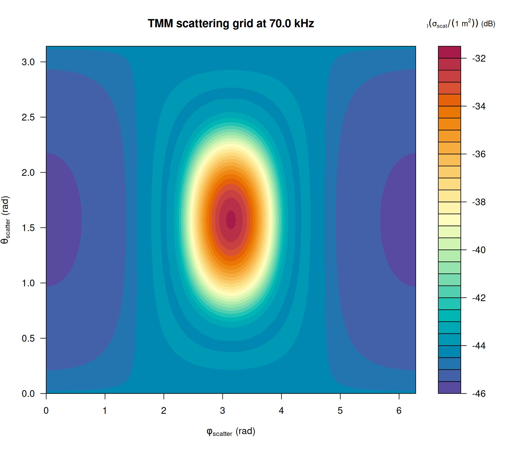
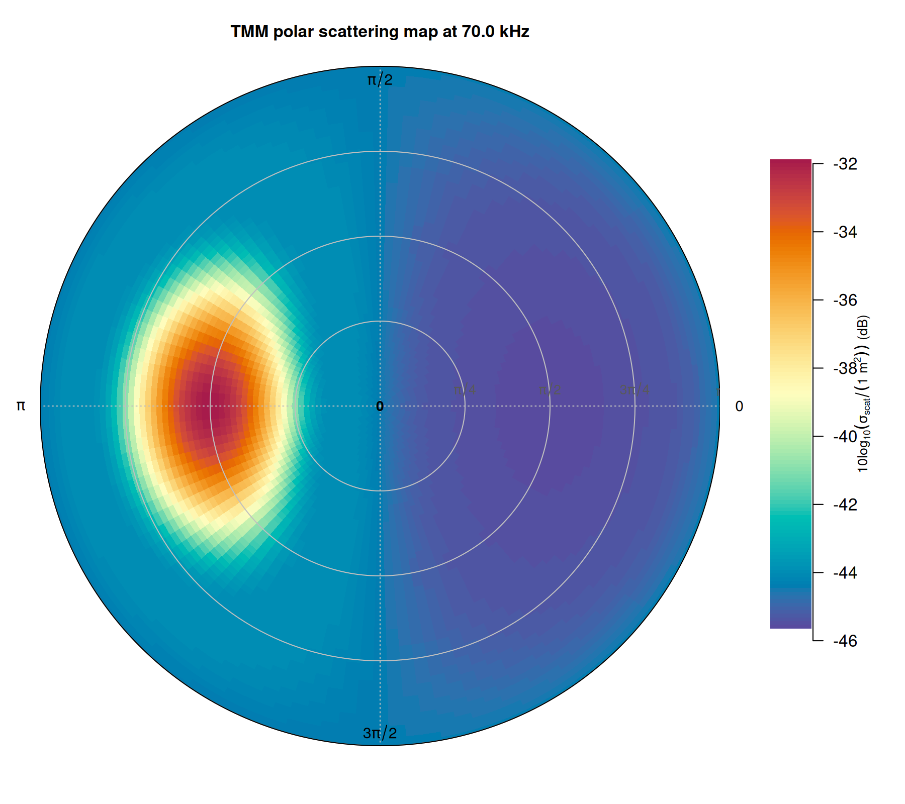
These two views show the stored liquid-filled oblate spheroid at
70 kHz, which is a useful intermediate case because it
still uses the spherical-coordinate retained branch but no longer has
the exact spherical symmetry of the sphere.
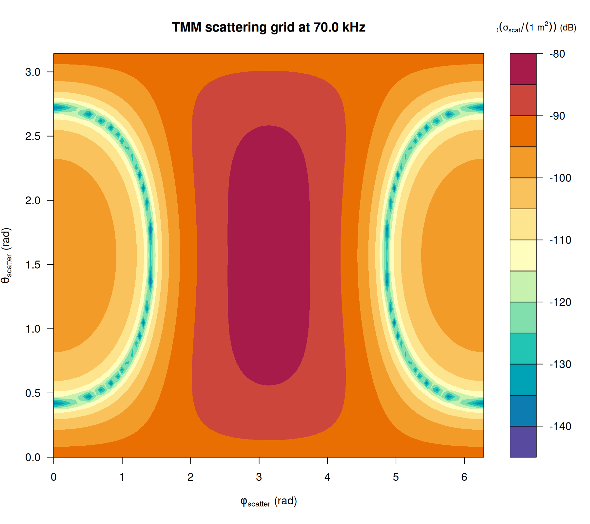
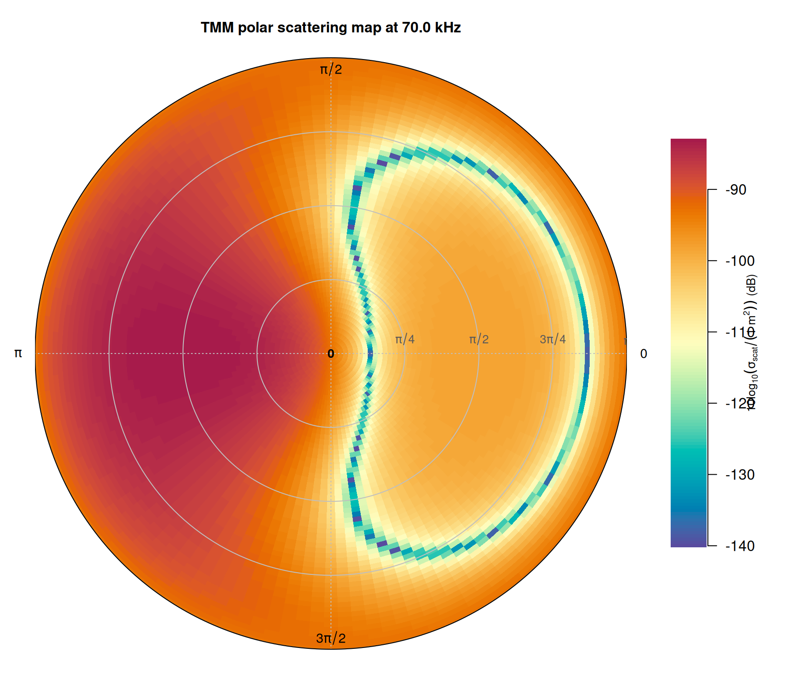
These two views show the stored liquid-filled prolate spheroid at
70 kHz, which is the geometry where the retained spheroidal
angular operator is most directly useful.
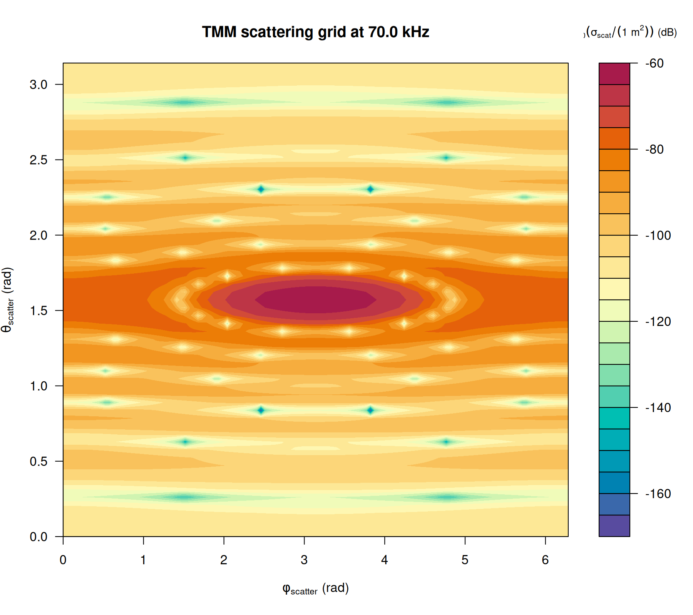
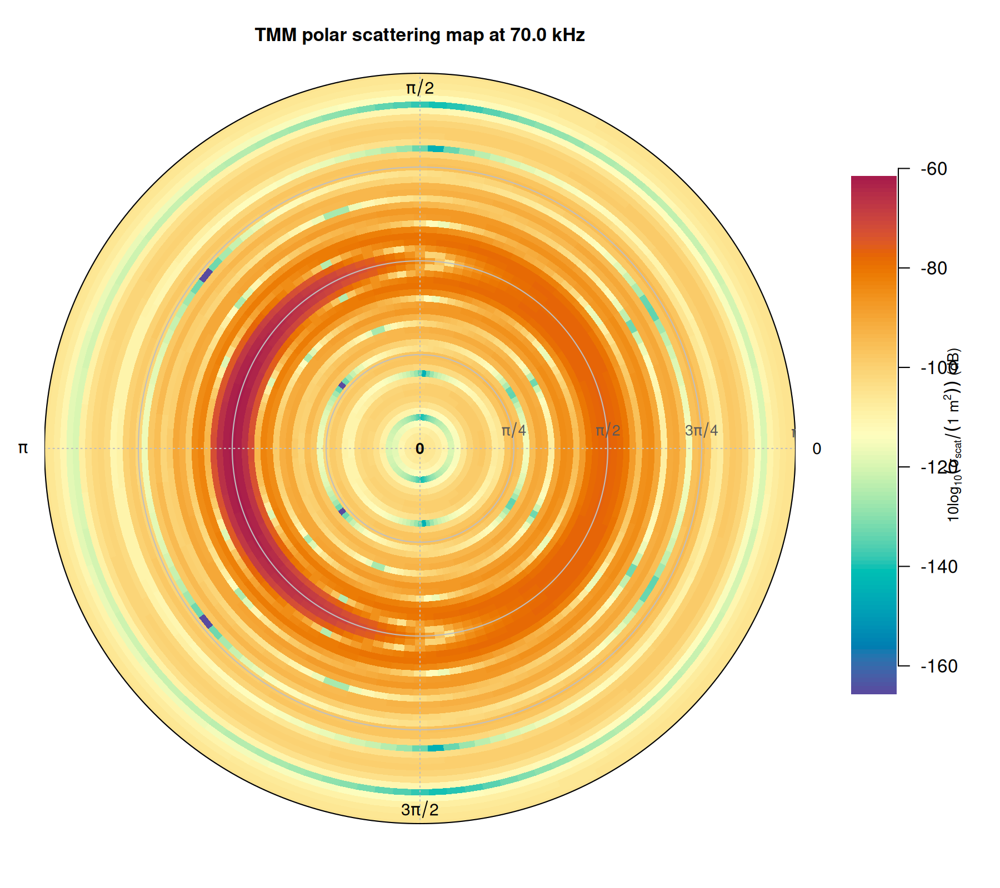
In each polar view, the radius is the scattering polar angle
theta_scatter, not physical distance from the target. So
the center corresponds to theta_scatter = 0, the outer ring
corresponds to theta_scatter = pi, and the target itself is
not drawn as a literal object at the origin.
Benchmark comparisons
The benchmark ladder is intentionally shape-specific and follows the exact-family references already used elsewhere in the package.
- Sphere cases are compared against
SPHMS - Oblate spheroids are checked through both the exact sphere limit and an external pressure-release BEMPP far-field slice for a genuinely nonspherical oblate case
- Prolate spheroid cases are compared against
PSMS - Cylinder cases are compared against
FCMSfor the default monostatic branch over the tested12-200 kHzgrids
Those broad checks were run over multiple shapes and multiple frequency grids rather than just one canonical example, but the resulting summary tables are kept static here so the implementation page remains lightweight to build.
Benchmark tables
Spherical models were benchmarked against SPHMS over
12:120 by 4 kHz for a = 5, 10,
and 18 mm.
| a (mm) | Boundary | \max \vert \Delta TS \vert ~ (\text{dB}) | \vert \overline{\Delta TS} \vert ~ (\text{dB}) | t_\text{TMM} (\text{s}) | t_\text{SPHMS} (\text{s}) |
|---|---|---|---|---|---|
5 |
fixed_rigid |
1.66e-11 |
1.95e-12 |
0.27 |
0.03 |
5 |
pressure_release |
1.76e-11 |
1.77e-12 |
0.31 |
0.07 |
5 |
liquid_filled |
2.26e-11 |
4.04e-12 |
0.39 |
0.01 |
5 |
gas_filled |
1.75e-11 |
1.75e-12 |
0.47 |
0.03 |
10 |
fixed_rigid |
2.37e-10 |
2.75e-11 |
0.50 |
0.00 |
10 |
pressure_release |
2.44e-10 |
2.91e-11 |
0.56 |
0.02 |
10 |
liquid_filled |
1.14e-10 |
1.67e-11 |
0.75 |
0.02 |
10 |
gas_filled |
2.45e-10 |
2.86e-11 |
0.78 |
0.01 |
18 |
fixed_rigid |
7.62e-10 |
8.32e-11 |
1.03 |
0.01 |
18 |
pressure_release |
7.91e-10 |
8.49e-11 |
1.06 |
0.00 |
18 |
liquid_filled |
4.59e-09 |
2.36e-10 |
1.47 |
0.02 |
18 |
gas_filled |
8.46e-10 |
8.71e-11 |
1.53 |
0.00 |
Oblate sphere-limit checks used three equal-volume radii and compared
against the SPHMS sphere limit at 12,
38, 70, and 120 kHz.
| Boundary | \max \vert \Delta TS \vert ~ (\text{dB}) | \vert \overline{\Delta TS} \vert ~ (\text{dB}) | t_\text{TMM} (\text{s}) | t_\text{SPHMS} (\text{s}) |
|---|---|---|---|---|
fixed_rigid |
3.60e-10 |
4.97e-11 |
0.11 |
0.05 |
pressure_release |
3.12e-10 |
5.06e-11 |
0.12 |
0.00 |
liquid_filled |
1.04e-10 |
2.02e-11 |
0.15 |
0.02 |
gas_filled |
3.12e-10 |
5.07e-11 |
0.23 |
0.00 |
Prolate models were benchmarked against PSMS. The
60 x 8 mm case used 12, 18,
38, 70, 100, and
150 kHz, while the 140 x 10 mm case used
12, 18, 38, 70, and
100 kHz.
| L (mm) | a (mm) | Boundary | \max \vert \Delta TS \vert ~ (\text{dB}) | \vert \overline{\Delta TS} \vert ~ (\text{dB}) | t_\text{TMM} (\text{s}) | t_\text{PSMS} (\text{s}) |
|---|---|---|---|---|---|---|
60 |
8 |
fixed_rigid |
0.00000 |
0.00000 |
0.03 |
0.08 |
60 |
8 |
pressure_release |
0.00000 |
0.00000 |
0.03 |
0.02 |
60 |
8 |
liquid_filled |
0.00000 |
0.00000 |
2.50 |
1.83 |
60 |
8 |
gas_filled |
0.00000 |
0.00000 |
2.39 |
2.53 |
140 |
10 |
fixed_rigid |
0.00000 |
0.00000 |
0.03 |
0.02 |
140 |
10 |
pressure_release |
0.00000 |
0.00000 |
0.02 |
0.02 |
140 |
10 |
liquid_filled |
0.00000 |
0.00000 |
2.81 |
2.23 |
140 |
10 |
gas_filled |
0.00000 |
0.00000 |
2.70 |
2.81 |
Cylinders were benchmarked against FCMS over
12, 18, 38, 70,
100, 150, and 200 kHz.
| L (mm) | a (mm) | Boundary | \max \vert \Delta TS \vert ~ (\text{dB}) | \vert \overline{\Delta TS} \vert ~ (\text{dB}) | t_\text{TMM} (\text{s}) | t_\text{FCMS} (\text{s}) |
|---|---|---|---|---|---|---|
70 |
10 |
fixed_rigid |
0.00e+00 |
0.00e+00 |
0.011 |
0.004 |
70 |
10 |
pressure_release |
0.00e+00 |
0.00e+00 |
0.001 |
0.000 |
70 |
10 |
liquid_filled |
0.00e+00 |
0.00e+00 |
0.009 |
0.001 |
70 |
10 |
gas_filled |
0.00e+00 |
0.00e+00 |
0.002 |
0.004 |
50 |
8 |
fixed_rigid |
3.55e-15 |
5.08e-16 |
0.000 |
0.000 |
50 |
8 |
pressure_release |
0.00e+00 |
0.00e+00 |
0.001 |
0.000 |
50 |
8 |
liquid_filled |
0.00e+00 |
0.00e+00 |
0.004 |
0.001 |
50 |
8 |
gas_filled |
0.00e+00 |
0.00e+00 |
0.002 |
0.004 |
These are intentionally not one-off canonical checks. The tables above sweep multiple shapes and frequency sets so the agreement is not just tied to one hand-picked sphere or one hand-picked prolate spheroid.
Two points matter most here.
- The sphere branch behaves like a true spherical-coordinate T-matrix
implementation and agrees with
SPHMSto numerical precision on the tested grid. - The oblate branch collapses correctly onto the exact sphere solution in the sphere limit and also agrees closely with an external pressure-release BEMPP slice for a genuinely nonspherical oblate case.
- The prolate branch uses the geometry-matched spheroidal-coordinate
backend, so the
TMMandPSMSspectra coincide across the tested geometry and frequency sweep for all four supported scalar boundary types. - The default monostatic finite-cylinder branch lands directly on
FCMSacross the tested geometry and frequency sweep because it uses the geometry-matched cylindrical modal backend, and the stored-cylinder path reuses that same backend only where the monostatic mapping is exact.
That fourth point is an in-package exact-family consistency
check, not a claim that the cylinder branch is already
externally closed against BEM/FEM over all angles. It means the default
monostatic TMM cylinder branch and FCMS are
the same calculation family at the package level. The external cylinder
discussion below is separate and is the reason the retained
general-angle cylinder helpers remain disabled.
That benchmark pattern is exactly what one would want at this stage.
The TMM family is useful because it stays within a
transition-matrix formulation while landing on the correct exact-family
answers for the canonical geometries it supports in the default
monostatic workflow.
Diagnostics and internal validation
Exact-family comparisons are the first validation ladder, but they
are not the whole story for TMM. For the newer branches, it
is also useful to check whether the retained operator is internally
self-consistent. The tmm_diagnostics() helper does that by
reusing the stored blocks and reporting:
- monostatic reconstruction residuals,
- reciprocity residuals under incident/receive-angle exchange,
- an optical-theorem residual for the spherical-coordinate branch, and
- block-level conditioning summaries.
For the rigid and pressure-release prolate branches, the stored-block
TMM angular field can be checked directly against the exact
general-angle spheroidal modal-series solution used by
PSMS. That is the fastest way to constrain off-axis
disagreements, because it removes external meshing and solver
conventions from the loop and asks only whether the retained prolate
operator reproduces the exact scalar spheroidal field at the same
incident and receive angles.
diag_70 <- tmm_diagnostics(
prolate_store,
n_theta = 31,
n_phi = 61
)
diag_70$summaryIndependent BEMPP cross-checks were available for the pressure-release sphere, oblate, and prolate branches. The cylinder situation is different because the retained-cylinder scope is intentionally monostatic-only. So the validation ladder for these branches combines:
- exact-family checks where they exist (
SPHMS,PSMS,FCMS), - limiting-case checks such as the oblate sphere limit, and
- theorem-based diagnostics from the stored T-matrix blocks.
The table below shows representative diagnostic summaries for one stored object from each supported branch, where e is the residual.
| Case | \mathscr{f}~(\text{kHz}) | Max monostatic e | Max reciprocity e | Max optical-theorem e | Min block rcond
|
Max block transpose e |
|---|---|---|---|---|---|---|
sphere, fixed_rigid
|
38, 70 |
2.55e-16 |
2.12e-16 |
1.24e-03 |
3.11e-09 |
1.93e-16 |
oblate spheroid, liquid_filled
|
38, 70 |
2.80e-16 |
1.14e-04 |
1.34e-03 |
2.24e-16 |
3.48e-01 |
prolate spheroid, liquid_filled
|
38, 70 |
3.28e-16 |
2.64e-12 |
NA |
3.35e-47 |
1.15e-13 |
finite cylinder, fixed_rigid
|
38, 70 |
0.00e+00 |
NA |
NA |
NA |
NA |
Two points are worth emphasizing.
- The sphere and prolate branches are numerically self-consistent to essentially machine precision on the tested grids.
- The stored-cylinder branch is deliberately narrower than the sphere
and prolate branches. It carries only the geometry-matched monostatic
reuse path, so reciprocity and optical-theorem-style angular diagnostics
are left as
NArather than being computed from an unvalidated cylinder grid operator.
Sphere-to-spheroid continuation
For spheroidal targets, one of the most useful internal checks is to start from the equal-volume sphere limit and then deform the target smoothly to the requested aspect ratio. The monostatic response should move smoothly along that path. Abrupt jumps, non-finite values, or strong zig-zag second differences at modest aspect ratio are a sign that the truncation or angular reconstruction is not under control.
This check is built into tmm_diagnostics() for prolate
and oblate targets. The continuation is generated at constant volume,
beginning from the exact sphere limit and stepping to the requested
spheroidal aspect ratio.
The figure below shows the built-in continuation path for a
pressure-release prolate spheroid with target aspect ratio
3.5.
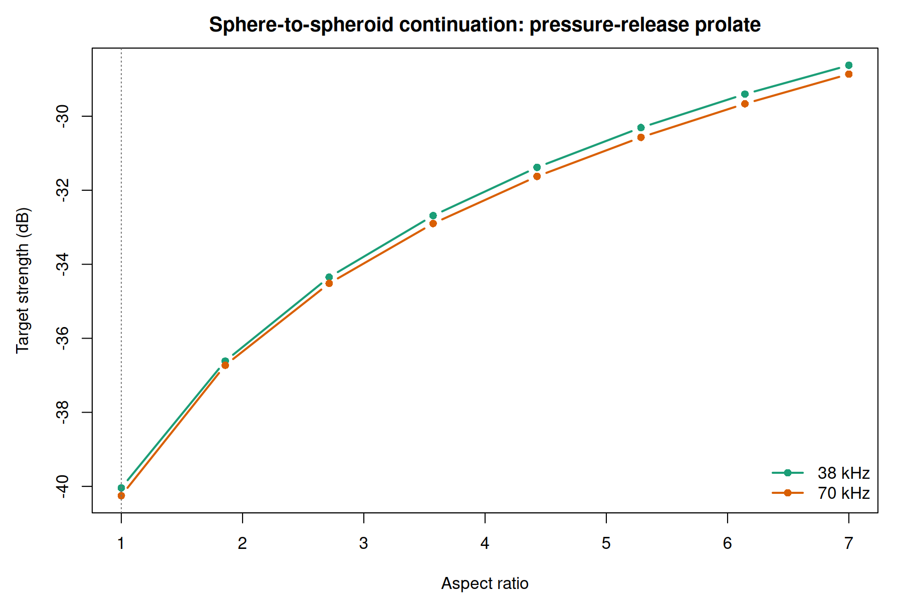
The practical point is simple: this is a much faster development check than an external solver loop. It constrains whether the stored T-matrix branch behaves sensibly before external meshing, field normalization, or far-field extraction are even involved.
Exact prolate angular validation
For the retained prolate branch, the most useful validation is not a paper-style sketch and not an external mesh-based comparison. It is a direct check against the exact general-angle spheroidal solution already available in the package for rigid and pressure-release scalar prolates. That is the right apples-to-apples comparison because it uses:
- the same geometry,
- the same incident and receive-angle definitions,
- the same scalar boundary conditions, and
- the same far-field normalization.
So, for the retained prolate TMM operator, the key
question is simply whether tmm_scattering() reproduces the
exact prolate_spheroid_fbs() field when both are evaluated
at the same stored frequency and the same incident/receive angles.
The figure below shows that check for a rigid and a pressure-release
prolate spheroid with L = 70 mm, a = 10 mm,
broadside incidence, and a 38 kHz equatorial receive-angle
sweep. The line is the exact general-angle spheroidal solution and the
open symbols are the stored-block TMM reconstruction.

This directly tests the retained angular operator that powers
tmm_scattering(), tmm_scattering_grid(), and
the higher-level post-processing helpers.
That body-fixed angle convention also resolves the mismatch with the exploratory BEMPP prolate slice.
External comparison tables
For the pressure-release prolate case with L = 70 mm,
a = 10 mm, and 38 kHz, the retained
TMM branch and the external BEMPP far-field solution line
up closely across the tested incidence angles:
| World-frame incidence (deg) | Max abs. \Delta amplitude (dB) | Mean abs. \Delta amplitude (dB) | Note |
|---|---|---|---|
0 |
0.0069 |
0.0033 |
pressure-release, BEMPP far-field |
45 |
0.0076 |
0.0031 |
pressure-release, BEMPP far-field |
90 |
0.0078 |
0.0030 |
pressure-release, BEMPP far-field |
The same body-fixed/world-frame conversion is also important for the
nonspherical oblate branch, which uses the spherical-coordinate retained
operator. For a pressure-release oblate with polar semiaxis
c = 6 mm and equatorial semiaxis a = 10 mm,
the corrected BEMPP comparison is likewise tight on the tested
cases:
| Frequency (kHz) | World-frame incidence (deg) | Max abs. \Delta amplitude (dB) | Mean abs. \Delta amplitude (dB) | Validation note |
|---|---|---|---|---|
38 |
0 |
0.0091 |
0.0054 |
pressure-release, BEMPP far-field |
38 |
45 |
0.0083 |
0.0053 |
pressure-release, BEMPP far-field |
38 |
90 |
0.0079 |
0.0051 |
pressure-release, BEMPP far-field |
70 |
90 |
0.0091 |
0.0047 |
pressure-release, BEMPP far-field |
By contrast, the same corrected BEMPP comparison also clarifies why the package does not expose a full retained-cylinder angular operator. Additional pressure-release cylinder checks were run at a second frequency and a second geometry, and the exploratory retained-cylinder angular reconstruction remained much less reliable than the sphere and prolate branches:
| L (mm) | a (mm) | Frequency (kHz) | World-frame incidence (deg) | Stored-cylinder n_max
|
Max abs. \Delta amplitude (dB) | Mean abs. \Delta amplitude (dB) |
|---|---|---|---|---|---|---|
70 |
10 |
38 |
90 |
24 |
1.58 |
0.74 |
70 |
10 |
70 |
90 |
24 |
8.12 |
3.73 |
50 |
8 |
38 |
90 |
24 |
0.71 |
0.29 |
The exact monostatic cylinder branch can also be compared to the same BEMPP slices at the single backscatter point:
| L (mm) | a (mm) | Frequency (kHz) | World-frame incidence (deg) | Backscatter-point \Delta amplitude (dB) | Interpretation |
|---|---|---|---|---|---|
70 |
10 |
38 |
90 |
-0.128 |
broadside is the best tested case here, but it stays
above a < 0.1 dB target |
70 |
10 |
70 |
90 |
-0.063 |
broadside falls below 0.1 dB on this
tested case |
50 |
8 |
38 |
90 |
-0.198 |
the smaller broadside case stays above a
< 0.1 dB target |
70 |
10 |
38 |
45 |
-5.104 |
oblique monostatic agreement is not externally closed |
70 |
10 |
38 |
0 |
-272.091 |
the end-on pressure-release cylinder remains strongly inconsistent with BEMPP |
Those extra checks matter because they show the remaining cylinder issue is not just one broken benchmark file. A retained cylinder angular operator can sometimes be tuned to look better on a low-to-moderate-frequency case, but that improvement does not generalize cleanly once the frequency or geometry changes. So the external benchmark work supports a more precise conclusion: the retained prolate branch behaves correctly, while the cylinder family stops at exact monostatic reuse and orientation-averaged monostatic products until a separate validated retained cylinder angular operator is built.
External BEM validation figures
The BEMPP pressure-release slices are a useful second validation
ladder because they are independent of the in-package exact-family
models. The three figures below show the broadside 38 kHz
comparisons used to constrain the stored TMM angular
operators.
For the sphere, the comparison is direct because the world-frame
x-y slice and the body-fixed slice are identical by
symmetry. For the oblate and prolate spheroids, the BEMPP world-frame
slice is first converted to the same body-fixed angular convention used
by tmm_scattering(). That frame conversion is what resolves
the apparent nonspherical mismatch.
External BEM figures
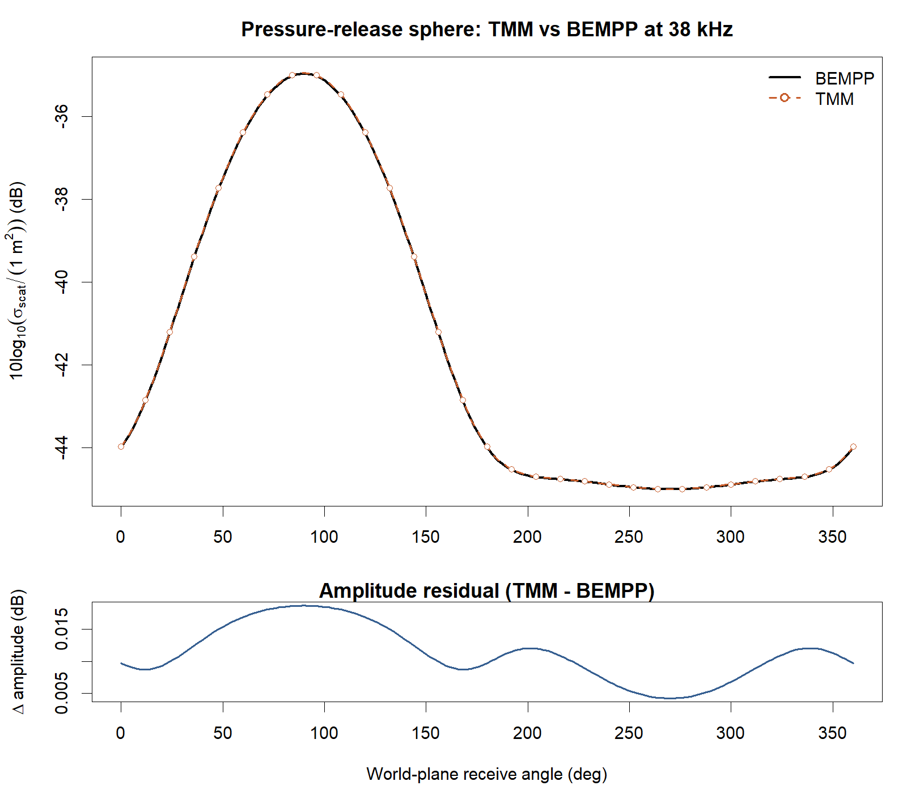
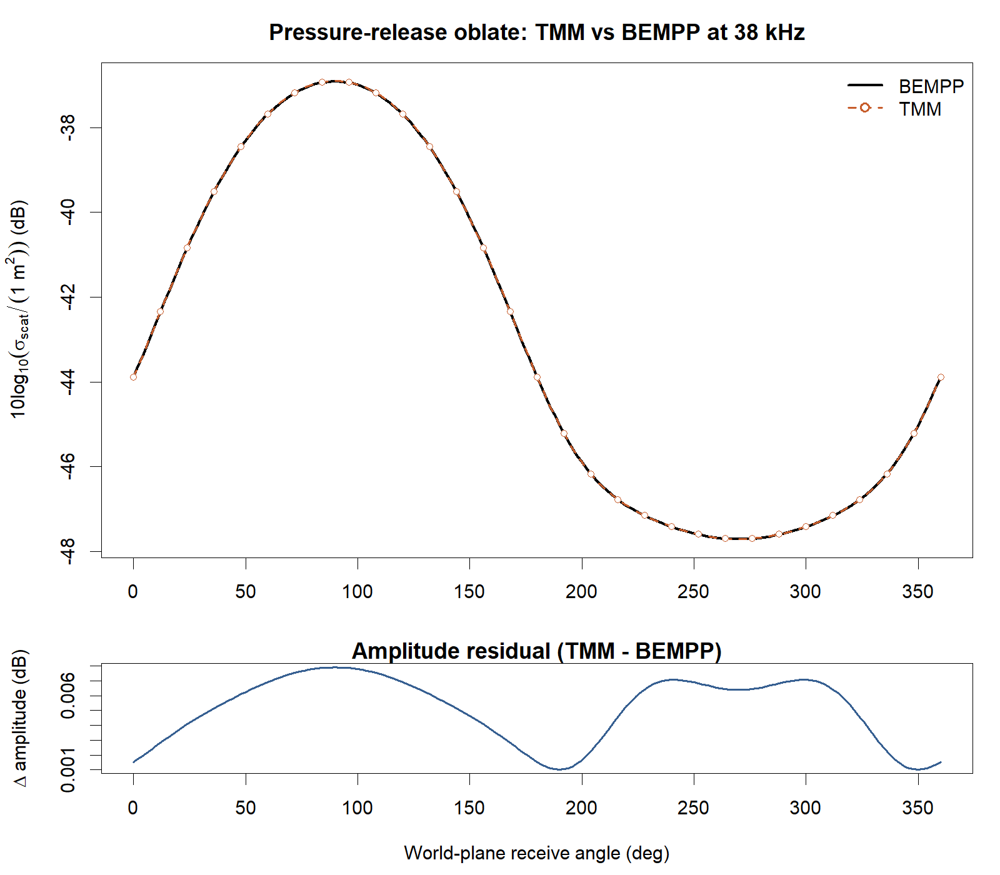
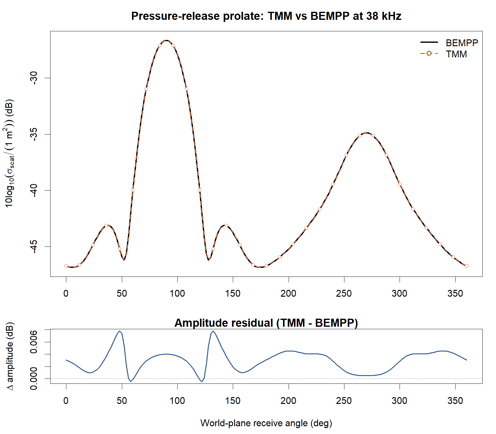
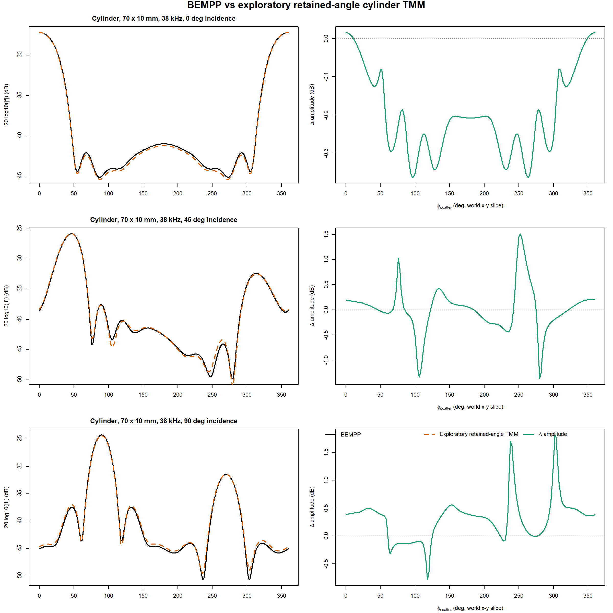
For the cylinder, the analogous full-angle figure is shown here only as a constraint on the exploratory retained-angle cylinder operator. It is not documenting a supported public cylinder workflow. The point of the figure is to show why the package refuses to provide full retained cylinder grids and bistatic summaries instead of pretending they are validated.
These figures make the external-validation story much more concrete:
- the pressure-release sphere is externally calibrated to the BEMPP far-field solver,
- the retained pressure-release oblate branch also agrees closely once the frame convention is matched correctly,
- the retained pressure-release prolate branch also agrees closely once the frame convention is matched correctly,
- the exploratory retained-angle cylinder branch does not agree externally and is therefore not part of the documented public retained-cylinder workflow, and
- even the exact monostatic pressure-release cylinder branch is only
externally close near broadside on the tested cases, so cylinder remains
the least externally constrained
TMMshape family and emits a warning by default when used.
At this point, no direct paper-figure reproduction is claimed here for the prolate angular response. If a future paper-grounded reproduction is added, it needs to match the original paper’s normalization, axes, and geometry conventions exactly rather than only mimicking the general visual style.
Representative spectra
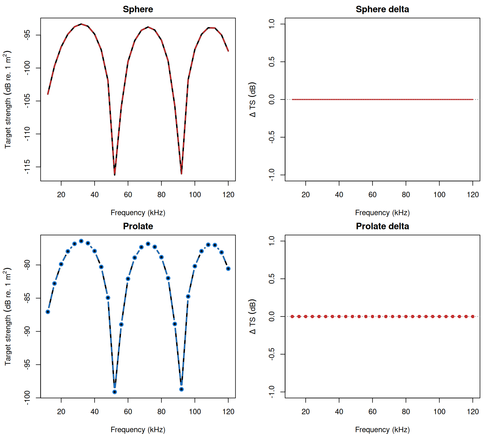
The sphere figure is the more conventional benchmark story: a
T-matrix implementation agreeing with the exact spherical modal
solution. The prolate figure is really a geometry-consistency story: the
TMM family lands on the exact spheroidal solution rather
than drifting because of a mismatched basis.